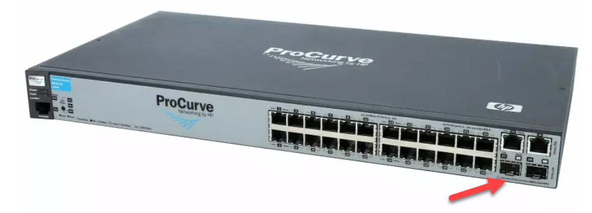
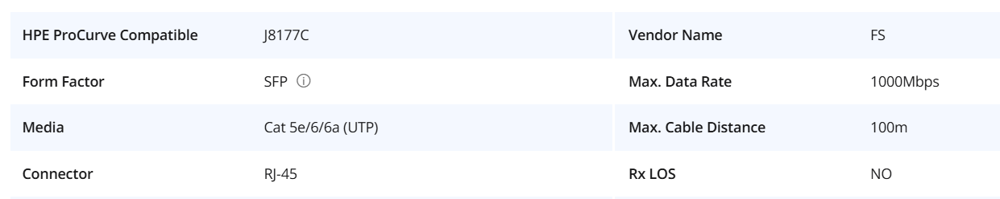
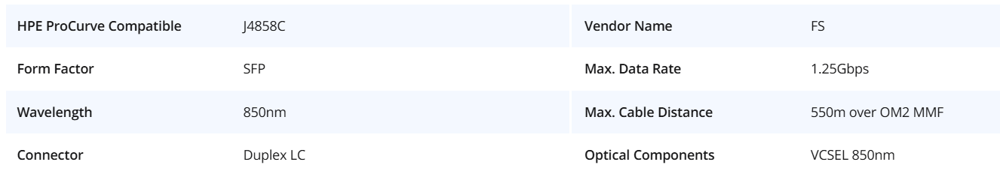
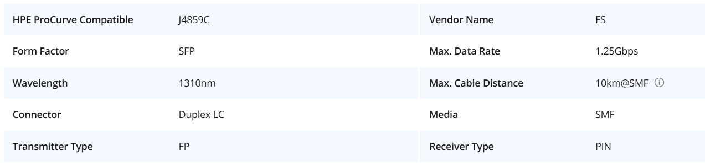
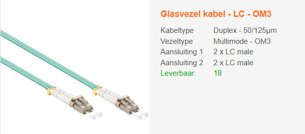
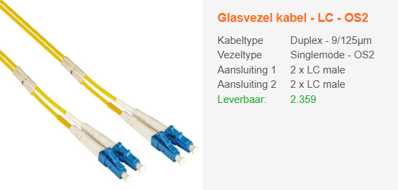
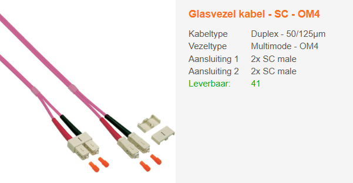

Gegeven:
In het labo gebruiken we de HP ProCurve 2610-24 switch. Deze heeft vierentwintig RJ-45 10/100 Base T poorten, twee Gig-T poorten en twee SFP poorten.

Gevraagd:
| cat5e / RJ45 | cat6 / RJ45 | cat6a / RJ45 | cat7 / GG45 | cat8 / RJ45 |
Verklaar je keuze:____________________________________________________________
__________________________________________________________________________
| cat5e / RJ45 | cat6 / RJ45 | cat6a / RJ45 | cat7 / GG45 | cat8 / RJ45 |
Verklaar je keuze:____________________________________________________________
__________________________________________________________________________
| J8117C | J4858C | J4859C |
Verklaar je keuze:____________________________________________________________
__________________________________________________________________________



| LC OM3 | LC OS2 | SC OM4 |


